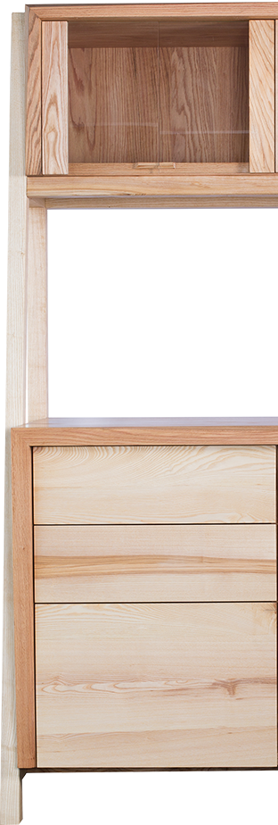
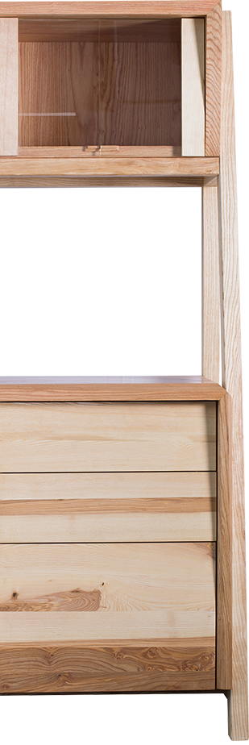
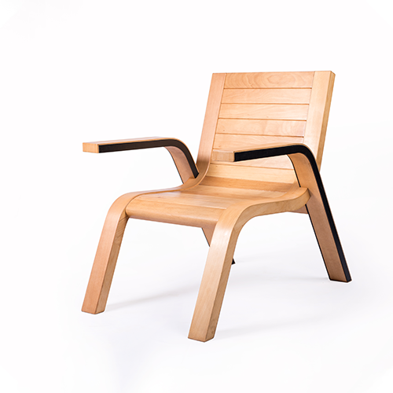
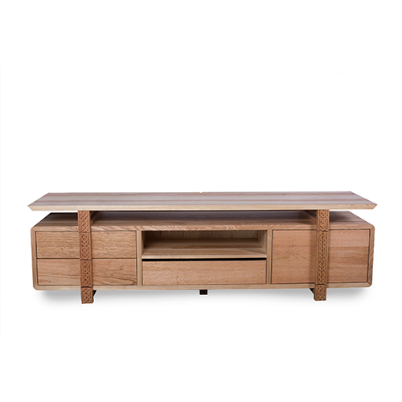

Kreo
Material: Red oak and ash;
Storage and display, dining area
Story
Kreo is a classic cosmopolitan crockery unit. It consists of a dual storage system which works purely based on the ease of functionality, and includes a working platform. Kreo is one of a kind piece that allows you to store and display your crockery in style.


Design
The design of Kreo is highly based on the functionality of the crockery unit. The storage unit rests on the crossings of the frames which creates the illusion of the unit being afloat. The sleek side frame binds the design as a whole.
Similar Products

Louvre
learn more
arrow_right_alt

Queven
learn more
arrow_right_alt

Stratis
Stratis
learn more
arrow_right_alt

Architecture
learn more
arrow_right_alt

Insula